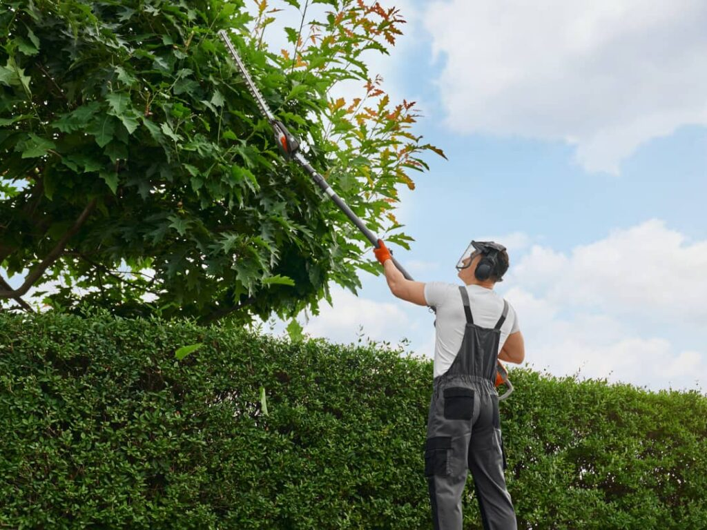

¿Quienes Somos?
En "El Jardín de Toni" somos especialistas en jardinería y mantenimiento de espacios verdes. Nos dedicamos al cuidado, diseño y conservación de jardines, ofreciendo soluciones adaptadas a las necesidades de cada cliente. Trabajamos con profesionalidad, compromiso y pasión por la naturaleza, garantizando un servicio de calidad para particulares, comunidades y empresas. Nuestro objetivo es crear y mantener jardines saludables, bonitos y funcionales para que puedas disfrutar de ellos durante todo el año.
Tambien somos especialistas en el mantenimiento de las piscinas. De manera que si quieres un mantenimiento del jardín junto con la piscina somos las personas adequadas.

Servicios 🛠

Mantenimiento del jardín
Cuidamos jardines y zonas verdes mediante corte de césped, poda, limpieza y mantenimiento general para conservarlos siempre en perfectas condiciones.

Poda de árboles y setos
Realizamos podas para mantener árboles y setos sanos, seguros y con una apariencia cuidada durante todo el año.

Instalación y reparación de sistema de riego
Instalamos y reparamos sistemas de riego para garantizar un uso eficiente del agua y el correcto cuidado de las plantas.

Mantenimiento de piscinas
Nos encargamos de la limpieza, control del agua y revisión de equipos para mantener tu piscina limpia y lista para su uso.